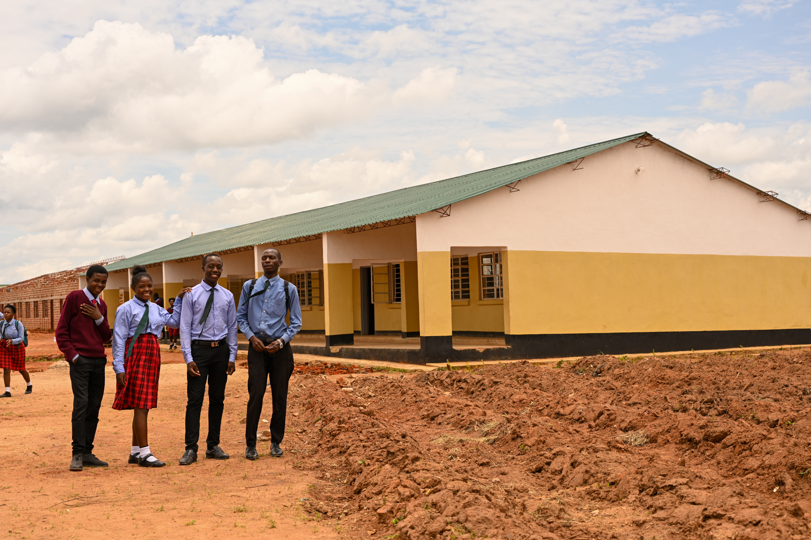

Our vision
To create a South Africa where every primary school child, regardless of their family circumstances or background, has access to educational support, essential learning resources and opportunities to reach their full potential.
Bright Futures SA is a proposed South African nonprofit initiative with a simple belief: every child deserves the resources and encouragement to learn.
For many families, the cost of basic school materials can place extra pressure on a child's learning journey. Bright Futures SA aims to bring communities together to help address these barriers through school-supply support, learning activities and partnerships with primary schools.
We intend to begin with practical, measurable projects and grow responsibly as funding, volunteers and partnerships become available. Our work will be shaped by the needs identified with schools and communities.
Bright Futures SA is a proposed organisation. Any future programmes will be launched as resources, governance and relevant permissions allow.

To create a South Africa where every primary school child, regardless of their family circumstances or background, has access to educational support, essential learning resources and opportunities to reach their full potential.
To support primary school learners, particularly those facing disadvantage, through school supplies, literacy and numeracy support, mentorship and community partnerships that help children learn, grow and build a better future.
We want every programme and partnership to reflect care for children and responsibility to the communities that trust us.
We put learners' safety, dignity and educational needs first.
We aim to support learners based on need and transparent criteria.
We strive to handle donations responsibly and report what they support.
We listen to schools, families, volunteers and local communities.
We aim to measure results and communicate progress honestly.
We encourage children to discover their abilities and potential.
A small, committed team of educators, community workers and volunteers working to open doors for primary school learners across South Africa.
Leads the vision and partnerships, with a background in community development and youth education.
Oversees school partnerships, learning pack distribution and day-to-day programme delivery.
Shapes literacy and numeracy support activities and works closely with teachers and learners.
Builds relationships with families, local leaders and volunteers in the communities we serve.
Works with sponsors, donors and businesses to grow sustainable support for our programmes.
Ensures our work is transparent, well-governed and aligned with safeguarding standards.